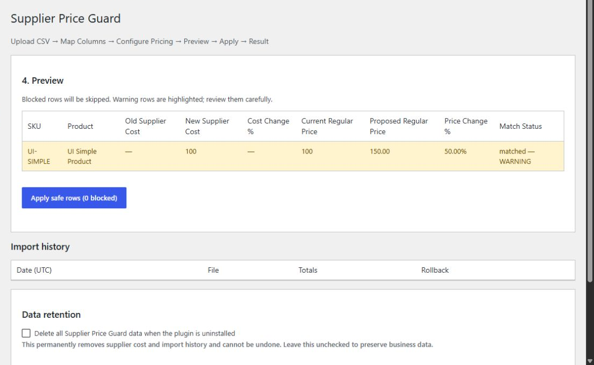
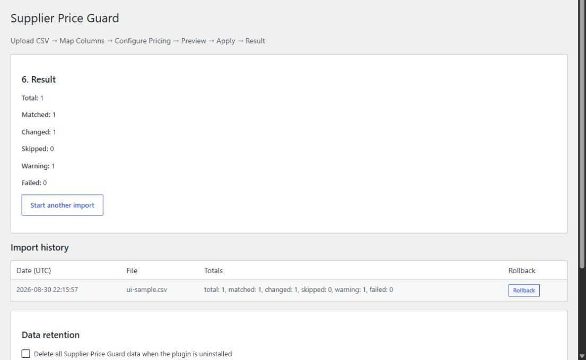

Upload and match
Load a supplier CSV and match simple products and variations by SKU. Missing and duplicate SKUs are not silently accepted.
Price-update safety for WooCommerce
Preview supplier cost changes, catch dangerous price swings, apply safely, and roll back when needed.
A deliberate workflow
CostHarbor Supplier Updates for WooCommerce is not a general-purpose product importer. It focuses on preventing pricing mistakes during supplier cost updates.
Load a supplier CSV and match simple products and variations by SKU. Missing and duplicate SKUs are not silently accepted.
Compare old and new supplier costs, current regular prices, proposed prices, and percentage changes before writing anything.
Apply reviewed rows only. The latest import records the affected supplier costs and regular prices for focused rollback.
Guardrails
Warnings and blocked rows are visually distinct, with the reason shown before you apply an update.


Focused recovery
Rollback restores only the CostHarbor Supplier Updates for WooCommerce cost and the regular price changed by that import. Titles, inventory, sale prices, and unrelated product data remain untouched.